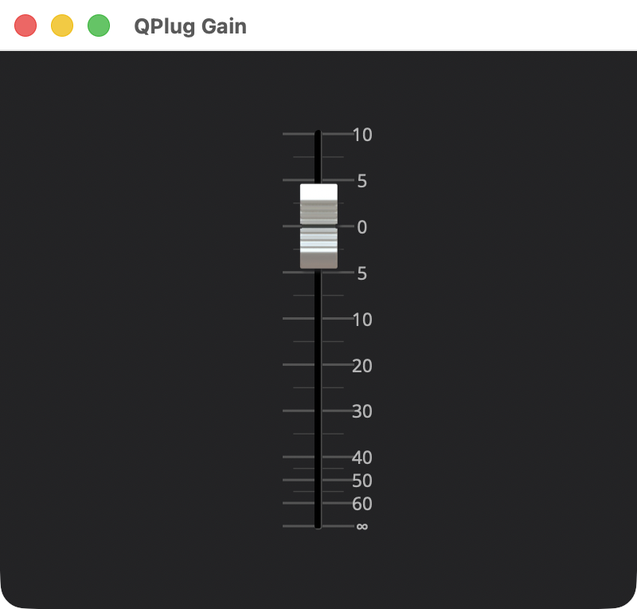

Your First Plugin: Gain
Overview
example/q_plug/gain is the smallest QPlug plugin: a mono gain with one
automatable parameter, a volume in decibels, and a console fader to move
it.

A QPlug plugin is a CLAP plugin, the open plugin format, and clap-wrapper builds a VST3 and an AudioUnit from the same code, so one plugin serves the hosts that load any of the three. The plugin itself is plain C++ against QPlug’s own types.
Small as it is, Gain has one of everything a plugin is made of: a controller that declares the parameter, a processor that applies it, a presenter that draws the fader, and the file that makes all three and gives the host the plugin’s identity. Architecture describes how those parts fit together. This page goes through the code in the order the plugin makes the parts, and then the build. The example is these files:
example/q_plug/gain/
CMakeLists.txt the build
gain_controller.hpp the parameter
gain_controller.cpp
gain_processor.hpp the DSP
gain_processor.cpp
gain_presenter.hpp the editor
gain_presenter.cpp
gain.cpp makes the three parts; the plugin's identity
resources/
slider-white.png the fader's thumbEvery listing below is the example’s own code, whole, less the license
banner, the include guards and the decorative rulers, and each title
links to the file itself, in
example/q_plug/gain. The folder,
copied out as it is, builds on its own: see Quick Start.
|
This tutorial skims over a lot of background. It shows what a plugin is made of and how the parts connect, and stops there. Each section ends with a pointer to the page that covers its subject in depth; read those alongside it. |
Quick Start
Build and run Gain first, then read how it works. You need a Q checkout
and the prerequisites QPlug Setup and Installation lists for your platform. Copy the example
into a temporary directory and build it there, with Q_ROOT pointing at
your Q checkout. Set Q to where that checkout is; nothing else in the
commands changes.
On macOS and Linux:
Q=/path/to/q
cp -R "$Q/example/q_plug/gain" /tmp/gain
cd /tmp/gain
cmake -B build -G Ninja -DCMAKE_BUILD_TYPE=Debug -DQ_ROOT="$Q"
cmake --build buildOn Windows, in a command prompt with the MSVC environment loaded
(vcvars64.bat):
set Q=C:\path\to\q
xcopy /E /I "%Q%\example\q_plug\gain" "%TEMP%\gain"
cd /d "%TEMP%\gain"
cmake -B build -G Ninja -DCMAKE_BUILD_TYPE=Debug -DQ_ROOT="%Q%"
cmake --build buildThe first configure fetches QPlug’s dependencies and takes a few minutes.
If /tmp/gain is left from an earlier try, remove it first, or the copy
lands inside it. Then start the standalone app, from the same directory:
-
macOS:
open "build/products/QPlug Gain.app" -
Linux:
"build/products/QPlug Gain" -
Windows:
"build\products\Standalone-q_plug-gain_standalone\QPlug Gain.exe"
The editor opens in a window of its own, as in the screenshot above. On macOS, the first launch asks for microphone access, since Gain takes audio input; allow it, or the app waits until you do. Where the app takes its audio and MIDI from, and how to change it, is in The Standalone App. The rest of this page goes through the files you just built.
The Controller
#include <q_plug/controller.hpp> (1)
namespace q_plug = cycfi::q_plug; (2)
// The controller declares the plugin's parameters; the base holds them.
class gain_controller : public q_plug::controller (3)
{
public:
using decibel = cycfi::q::decibel;
enum { volume_id }; (4)
// The fader runs from silence, the 24 bit floor, up to +10 dB.
static constexpr decibel silence = cycfi::q::dB(-144.0); (5)
static constexpr decibel max_volume = cycfi::q::dB(10.0);
parameter_list parameters() const override; (6)
decibel volume() const; (7)
parameter const& volume_param() const; (8)
};| 1 | The controller base, everything a controller is built on. |
| 2 | QPlug’s namespace is cycfi::q_plug. Every file of the example
shortens it to q_plug with this alias. |
| 3 | A controller derives from q_plug::controller. The base publishes the
names parameter and parameter_list, which is why the class uses them
unqualified. |
| 4 | volume_id is the parameter’s index in the list parameters()
returns. Every part of the plugin addresses the parameter by it. |
| 5 | silence and max_volume are the fader’s range, from the 24 bit floor
up to +10 dB. |
| 6 | parameters is the one function a controller must write.
gain_controller.cpp, below, defines it. |
| 7 | volume gives the processor the parameter’s value, as a q::decibel. |
| 8 | volume_param gives the presenter the parameter’s declaration, which
is where its range can be read. |
The header defines the two accessors inline, after the class:
// Inline implementation
inline gain_controller::decibel gain_controller::volume() const
{
return get_parameter<decibel>(volume_id); (1)
}
inline gain_controller::parameter const&
gain_controller::volume_param() const
{
return parameters()[volume_id]; (2)
}| 1 | get_parameter reads the parameter’s current value as the type asked
for. A Debug build asserts that the type matches the parameter’s kind. |
| 2 | The declaration is the entry at volume_id in the parameter list. |
The source file holds the one function a controller must write:
#include "gain_controller.hpp"
using parameter_list = gain_controller::parameter_list;
using namespace cycfi::q::literals; (1)
parameter_list gain_controller::parameters() const
{
static parameter params[] = (2)
{
parameter{ 1, "Volume", 0_dB }.range(silence.rep, max_volume.rep) (3) (4) (5)
};
return { params }; (6)
}| 1 | Q’s literals, 0_dB among them. |
| 2 | The array is static because parameter_list is a range over it, not
a copy, so it has to outlive the call. |
| 3 | Each entry is a parameter. Its first argument, 1, is the id. The
host saves and automates the parameter by it, so it is the parameter’s
identity for the life of the plugin: never reuse an id and never change
one. The id and the index are separate on purpose. QPlug translates
between them, and the plugin’s own code uses only the index. |
| 4 | An initial value of 0_dB makes this a decibel parameter, with dB
as its unit. That is what lets volume read it back with
get_parameter<decibel>. |
| 5 | A decibel parameter starts with a range of -60 to +12 dB. range
replaces it with the fader’s own, in plain numbers, hence .rep. |
| 6 | The list returned is a view of the array. |
That is the whole controller. The base holds the value where both threads can reach it, as Architecture describes, and saves it with the state.
|
In depth: Controller, for the controller, and Parameters, for ranges, units and tapers. |
The Processor
#include <q_plug/processor.hpp>
#include <q/fx/lowpass.hpp> (1)
#include "gain_controller.hpp"
namespace q_plug = cycfi::q_plug;
namespace q = cycfi::q;
class gain_processor : public q_plug::processor (2)
{
public:
gain_processor(gain_controller& ctl);
channel_config channels() const override { return {1, 1}; } (3)
void activate() override; (4)
void reset() override;
void process(
in_channels const& in
, out_channels const& out) override;
private:
float gain() const;
gain_controller& _ctl; (5)
q::one_pole_lowpass _gain_lp{0.0f}; (6)
};| 1 | Q’s one pole low-pass filter, which smooths the gain. |
| 2 | The processor base, q_plug::processor, is a Q
audio_stream_base, so
process takes Q’s in_channels and out_channels, the same
multi_buffer a Q program
works with. |
| 3 | One input and one output. Without this override a processor is stereo in and out. A plugin has one channel layout, so this is a mono plugin, and a host offers it on mono tracks. |
| 4 | activate, reset and process are the processor’s life cycle,
defined in the source file below. |
| 5 | The processor keeps the controller, which is where the volume is read. |
| 6 | The smoother, a
one_pole_lowpass. The
0.0f it is built with is the filter’s coefficient, not a starting value:
at 0 the output does not move. activate gives it its real cutoff once
the sample rate is known. |
#include "gain_processor.hpp"
#include <q/support/decibel.hpp> (1)
using namespace cycfi::q::literals;
namespace
{
// A parameter change slews at this rate instead of stepping, which
// would click.
constexpr auto smoothing = 4_Hz; (2)
}
gain_processor::gain_processor(gain_controller& ctl)
: _ctl(ctl)
{}
// The stream is known here, and stays put until the next activation.
void gain_processor::activate()
{
_gain_lp.cutoff(smoothing, sps()); (3)
}
// A transport jump: take up the current gain rather than sliding to it.
void gain_processor::reset()
{
_gain_lp = gain(); (4)
}| 1 | Q’s decibel, for
q::lin_float, which gain uses below. |
| 2 | 4_Hz is another Q literal, a q::frequency. |
| 3 | sps() is the sample rate, in samples per second. The smoother’s
cutoff depends on it, so it is set here, once, rather than on every
block. |
| 4 | Assigning to a one_pole_lowpass sets its output, so after a
transport jump the smoother starts at the current gain instead of gliding
up to it. |
void gain_processor::process(in_channels const& in, out_channels const& out)
{
auto target = gain(); (1)
auto frames = in.frames.size();
for (std::size_t f = 0; f != frames; ++f)
{
auto g = _gain_lp(target); (2)
for (std::size_t ch = 0; ch != in.size(); ++ch)
out[ch].begin()[f] = in[ch].begin()[f] * g; (3)
}
}
// The bottom of the fader is silence.
float gain_processor::gain() const
{
auto db = _ctl.volume();
return db <= gain_controller::silence ? 0.0f : q::lin_float(db); (4)
}| 1 | The target gain is read once per call, which is enough: each call is a run of frames between the host’s events, so a volume change still lands on the frame the host put it on. |
| 2 | Every frame passes through the smoother, so a change moves the gain at 4 Hz instead of jumping to it. |
| 3 | Each channel’s sample at frame f, scaled by the smoothed gain.
in.frames is the call’s range of frames, counted from 0, and
out[ch].begin()[f] is channel ch’s sample at frame `f. |
| 4 | q::lin_float turns decibels into a factor. At the bottom of the
fader gain returns 0, true silence, rather than the very small factor
-144 dB converts to. |
Nothing here locks, allocates or calls the host. The processor reads a parameter and writes samples.
|
In depth: Processor, for the processor’s life cycle and how the host’s events are placed at the frames they belong to. |
The Presenter
The editor is built with Elements,
Cycfi’s C++ GUI library. An Elements interface is a tree of elements,
each a unit that sizes itself, draws and takes input, from a box to a
slider, composed by holding one another: here a margin holds the fader,
and the view holds the margin over a background. The presenter builds that
tree and links its controls to the parameters.
#include <q_plug/presenter.hpp>
#include "gain_controller.hpp"
namespace q_plug = cycfi::q_plug;
namespace elements = cycfi::elements; (1)
class gain_presenter : public q_plug::presenter (2)
{
public:
gain_presenter(gain_controller& ctl);
protected:
void on_attach(elements::view& view_) override; (3)
private:
gain_controller& _ctl; (4)
};| 1 | Elements' namespace is cycfi::elements, shortened the same way as
QPlug’s. |
| 2 | A presenter derives from q_plug::presenter, the presenter base,
which owns the view. |
| 3 | on_attach builds the editor’s content, in the source file below. |
| 4 | The presenter keeps the controller as gain_controller, to reach
volume_param. |
#include "gain_presenter.hpp"
#include <elements.hpp> (1)
gain_presenter::gain_presenter(gain_controller& ctl)
: q_plug::presenter(ctl) (2)
, _ctl(ctl)
{}
using namespace cycfi::elements; (3)
namespace
{
auto constexpr bkd_color = rgba(35, 35, 37, 255); (4)
}| 1 | All of Elements, in one header. |
| 2 | The controller is passed on to the base. |
| 3 | Lets the code below name its elements unqualified. |
| 4 | The editor’s dark gray background. |
void gain_presenter::on_attach(elements::view& view_) (1)
{
// A fader: the decibel taper of a console, marked and labeled at the
// usual points over the parameter's range.
auto const& param = _ctl.volume_param();
db_scale scale{param.min(), param.max()}; (2)
auto track = slider_labels_db<10>( (3)
slider_marks_db<40>(basic_track<5, true>(), scale),
0.8, // Label font size (relative)
scale
);
auto fader = share( (4)
slider(align_center(image{"slider-white.png", 1.0/4}), track) (5)
);
bind(gain_controller::volume_id, fader, scale); (6)
view_.content( (7)
align_center(vmargin({20, 20}, hold(fader))),
box(bkd_color)
);
}| 1 | Called with each new view, so the content is built here. |
| 2 | db_scale is Elements' console taper. It maps decibels to the fader’s
travel and back, gives the range around unity most of the travel, and
squeezes the quiet end into the bottom. It is made from the parameter’s
own range, read from the declaration, so the fader’s range and the
parameter’s cannot differ. |
| 3 | The same scale places the ticks (slider_marks_db) and writes the
labels beside them (slider_labels_db), with the infinity sign at the
bottom, since the range reaches silence. |
| 4 | share makes the fader a std::shared_ptr, which is what bind
takes. |
| 5 | The thumb is an image, slider-white.png, drawn at a quarter of its
pixel size. It ships with the example, in resources/. Elements loads
images from beside the plugin, so the build copies it there, through
q_plug_add_resources (see The Build). An editor that draws images of
its own keeps them in resources/ and names each one in that call. |
| 6 | bind connects the fader to the parameter both ways, through the
scale. What the user does to the fader reaches the host as an edit,
bracketed as one gesture. What the host does to the parameter, from
automation or a restored session, moves the fader. The bindings go when
the view does. |
| 7 | view_.content stacks its elements with the first on top: the fader
over the dark background. hold puts the shared fader in the tree
without copying it, so the view and the binding refer to the same
fader. |
|
In depth: Presenter, for the presenter
and |
The Plugin
gain.cpp makes the three parts and declares the plugin’s identity:
#include <q_plug/plugin.hpp> (1)
#include "gain_processor.hpp"
#include "gain_controller.hpp"
#include "gain_presenter.hpp"
namespace cycfi::q_plug (2)
{
controller_ptr make_controller() (3)
{
return std::make_unique<gain_controller>();
}
processor_ptr make_processor(controller& ctl) (4)
{
return std::make_unique<gain_processor>(
static_cast<gain_controller&>(ctl));
}
presenter_ptr make_presenter(controller& ctl)
{
return std::make_unique<gain_presenter>(
static_cast<gain_controller&>(ctl));
}
plugin_info const& info() (5)
{
static char const* const features[] = (6)
{
"audio-effect",
"mono",
nullptr
};
static plugin_info const i = (7)
{
"com.qplug.gain", // id
"QPlug Gain", // name
"QPlug", // vendor
"", // url
"", // manual_url
"", // support_url
"0.1.1", // version
"Simple mono gain plugin", // description
features,
{400, 350}, // view size
1 // state version
};
return i;
}
}| 1 | Declares the four functions below, and plugin_info. |
| 2 | These four functions, in cycfi::q_plug, are all QPlug requires a
plugin to supply. |
| 3 | The controller is made first. |
| 4 | The processor and the presenter are each handed the controller as a
plain controller&, and the cast gets gain’s own type back. This is the
only place the three parts meet. |
| 5 | info returns the plugin_info described above. |
| 6 | The feature list is null terminated. audio-effect and mono are
CLAP’s standard features for a mono effect. |
| 7 | The id is in reverse domain form, and the build repeats it (see The Build). The state version stays at 1. |
|
In depth: The Plugin, in Architecture, for how the four functions and the three parts fit together. |
The Build
example/q_plug/gain/CMakeLists.txt builds the plugin in every format:
cmake_minimum_required(VERSION 3.21)
# Before project(): Artist needs std::filesystem, from macOS 10.15, and its
# prebuilt bundles target 11.0.
set(CMAKE_OSX_DEPLOYMENT_TARGET "11.0" CACHE STRING "Minimum macOS version") (1)
project(q_plug_gain LANGUAGES C CXX) (2)
# Built on its own, outside Q: bring in Q, with QPlug, from Q_ROOT.
if(NOT TARGET q_plug) (3)
if(NOT Q_ROOT)
message(FATAL_ERROR "Q_ROOT is not set")
endif()
set(Q_BUILD_PLUG ON)
set(Q_BUILD_EXAMPLES OFF)
set(Q_BUILD_TEST OFF)
add_subdirectory(${Q_ROOT} q) (4)
endif()
q_plug_settings() (5)
# The plugin's own code, plus the q_plug adapter it links.
add_library(q_plug_gain_impl STATIC (6)
gain.cpp
gain_processor.cpp
gain_controller.cpp
gain_presenter.cpp
)
# q_plug is PRIVATE on purpose: the clap-wrapper format modules must link it
# and Elements but must not inherit their compile options, since Elements
# exports -fobjc-arc and clap-wrapper's Cocoa code is manual retain/release.
# clap is PUBLIC because the entry shim compiled into each module needs it.
target_link_libraries(q_plug_gain_impl PRIVATE q_plug PUBLIC clap)
q_plug_add_host(q_plug_gain_impl QPlugGain) (7)
# Assemble CLAP, VST3 and AUv2 from the one implementation.
make_clapfirst_plugins( (8)
TARGET_NAME q_plug-gain
IMPL_TARGET q_plug_gain_impl
OUTPUT_NAME "QPlug Gain" (9)
ENTRY_SOURCE "${Q_PLUG_ROOT}/src/clap/q_plug_entry.cpp"
BUNDLE_IDENTIFIER "com.qplug.gain" (10)
BUNDLE_VERSION "${q_plug_VERSION}"
COPY_AFTER_BUILD FALSE (11)
WINDOWS_FOLDER_VST3 TRUE # a bundle, so its fonts go inside
PLUGIN_FORMATS ${Q_PLUG_PLUGIN_FORMATS} (12)
# A standalone app around the same CLAP, to try it without a host.
STANDALONE_CONFIGURATIONS (13)
standalone "QPlug Gain" "com.qplug.gain"
ASSET_OUTPUT_DIRECTORY "${CMAKE_BINARY_DIR}/products"
AUV2_MANUFACTURER_NAME "QPlug" (14)
AUV2_MANUFACTURER_CODE "QPlg"
AUV2_SUBTYPE_CODE "QGan"
AUV2_INSTRUMENT_TYPE "aufx"
)
q_plug_separate_import_libs(q_plug-gain) (15)
q_plug_fix_auv2_plist(q_plug-gain) (16)
q_plug_add_resources(q_plug-gain (17)
"${CMAKE_CURRENT_SOURCE_DIR}/resources/slider-white.png")
q_plug_add_validation_tests(gain "QPlug Gain" aufx QGan QPlg) (18)| 1 | The macOS deployment target comes before project(), where CMake
reads it. Artist, the graphics library Elements draws with, sets its
floor. |
| 2 | The file opens as a project of its own, which is what lets the folder build outside Q. |
| 3 | Inside Q’s build, q_plug already exists and this block is skipped. |
| 4 | Built on its own, the block adds Q from Q_ROOT, with QPlug on and
Q’s own examples and tests off. |
| 5 | q_plug_settings gives this directory what every plugin needs:
C++20, position independent code, the static MSVC runtime and, on macOS,
Objective-C, which the host layer is written in. |
| 6 | The plugin’s code and the QPlug adapter are one static library,
q_plug_gain_impl. |
| 7 | q_plug_add_host compiles Elements' host layer, the platform code
that puts an Elements view in a window, into that library, with its view
class named after QPlugGain. On macOS every Objective-C class name is
shared by the whole process, so two plugins in one host would otherwise
define the same class. The prefix must be a valid identifier, and unique
to the plugin. |
| 8 | make_clapfirst_plugins is clap-wrapper’s, and builds a module per
format from that one library, compiling QPlug’s entry shim into each. The
shim exports the entry point the format defines, the function a host
calls to load the plugin. Q_PLUG_ROOT, set by QPlug’s CMake, is QPlug’s
own folder, where the shim is. |
| 9 | The modules are named for OUTPUT_NAME and land in products/ under
the build directory. |
| 10 | BUNDLE_IDENTIFIER, and the standalone’s id below, repeat the id in
plugin_info, com.qplug.gain. The three must match: the standalone
finds the plugin by it. |
| 11 | Keeps the build from installing the modules into the system’s plugin folders. |
| 12 | Q_PLUG_PLUGIN_FORMATS is CLAP and VST3, and AUv2 as well on macOS. |
| 13 | One more product, a standalone app named QPlug Gain that hosts the
same CLAP with its own audio and MIDI devices, through RtAudio and RtMidi.
Its three values are the configuration’s name, standalone, which ends
the app’s target name (q_plug-gain_standalone), then the app’s name and
the plugin id it hosts. |
| 14 | The AUv2 codes are the component’s identity to macOS, and aufx
registers it as an effect. |
| 15 | Gives each format its own directory for the import library and export
file MSVC writes with every link. The formats share one output name, so
without it two links running at once write the same .lib and one of
them fails. It does nothing with other toolchains. |
| 16 | Keeps the AudioComponents entry in the AUv2 bundle across a reconfigure, working around a clap-wrapper quirk. It does nothing off macOS. |
| 17 | Copies the fonts Elements draws with, and the files named, here the
fader’s thumb, into every format’s bundle. Off macOS, a CLAP is a plain
library with no bundle and the standalone app a plain executable, so their
resources go in a folder beside them, QPlug Gain Resources.
WINDOWS_FOLDER_VST3 builds the Windows VST3 as a folder, which gives its
resources somewhere to go. |
| 18 | Registers one ctest test per format, each running that format’s
validator on the product: gain.clap, gain.vst3 and, on macOS,
gain.au, which is why it is given the AU type, subtype and manufacturer
codes. The tests belong to Q’s own build; built on its own, outside Q,
the call does nothing. |
|
In depth:
One Implementation, Three Formats,
in Architecture, for how one library becomes every format, and
The Validation Tests, in
Testing QPlug, for the validators, and
Building Outside the Project,
in QPlug Setup and Installation, for |
Running
Inside Q, from the Q checkout itself, build everything, as QPlug Setup and Installation describes, then run gain’s tests:
cmake -B cmake-build-debug -G Ninja -DCMAKE_BUILD_TYPE=Debug -DQ_BUILD_PLUG=ON
cmake --build cmake-build-debug
ctest --test-dir cmake-build-debug -R gainThe build leaves the products in cmake-build-debug/products/:
-
macOS:
QPlug Gain.app,QPlug Gain.clap,QPlug Gain.vst3andQPlug Gain.component. -
Windows:
CLAP/QPlug Gain.clap,VST3/QPlug Gain.vst3andStandalone-q_plug-gain_standalone/QPlug Gain.exe, each with its resources. -
Linux:
QPlug Gain, the standalone app,QPlug Gain.clapandQPlug Gain.vst3, with theQPlug Gain Resourcesfolder the app and the CLAP share.
The standalone app is the quickest way to try the plugin, since it needs no host: start it, and the editor opens in a window of its own.
The build does not install the plugins. To load one in a host, copy it to the host’s plugin folder:
-
macOS:
~/Library/Audio/Plug-Ins/CLAP,~/Library/Audio/Plug-Ins/VST3or~/Library/Audio/Plug-Ins/Components. The AU test has already put the component there. -
Windows: a CLAP goes in
%LOCALAPPDATA%\Programs\Common\CLAPor%COMMONPROGRAMFILES%\CLAP, together with theQPlug Gain Resourcesfolder beside it. A VST3 goes in your host’s VST3 folder. -
Linux: a CLAP goes in
~/.clapor/usr/lib/clap, together with theQPlug Gain Resourcesfolder beside it. A VST3 goes in~/.vst3.
Insert QPlug Gain on a mono track and open its editor. Drag the fader, and automate Volume from the host; the fader follows.
Your Own Plugin
To start a plugin of your own, start from a copy made as in
Quick Start, in a folder of your own rather than a temporary one.
Q_ROOT takes an absolute path, or one relative to the plugin’s folder.
The products land in build/products/, laid out as in Running.
Then make it yours. Rename, and keep each group consistent:
-
The id:
plugin_info’s id in `gain.cpp,BUNDLE_IDENTIFIER, and the id inSTANDALONE_CONFIGURATIONS. All three must match. Use reverse domain form under a domain of your own. -
The name:
plugin_info’s name and vendor, `OUTPUT_NAME, and the standalone’s name. The products and theResourcesfolder are named afterOUTPUT_NAME. -
The version:
plugin_info’s version, and `BUNDLE_VERSION, which the example takes from QPlug’s own version. Give both your plugin’s. -
The CMake names: the
project, the implementation library, andTARGET_NAME, whichq_plug_separate_import_libs,q_plug_fix_auv2_plistandq_plug_add_resourcesare given too. -
The prefix given to
q_plug_add_host, a valid identifier unique to your plugin. -
The AudioUnit identity:
AUV2_MANUFACTURER_NAME, your name as a host shows it, and two codes of four characters each,AUV2_MANUFACTURER_CODE, yours, andAUV2_SUBTYPE_CODE, unique among your plugins. -
The thumb image, if you like: the copy carries
resources/slider-white.pngalong with the code.
The class and file names can stay or change; nothing outside the folder
depends on them. The validation tests run inside Q’s own build only, so a
build of your own registers none and ctest finds nothing to run;
q_plug_add_validation_tests can go.
To load the plugin in a host, copy it as Running describes. On macOS,
the AudioUnit test that installs the component inside Q does not exist
here: copy the .component into ~/Library/Audio/Plug-Ins/Components
yourself. macOS registers it on its own, within a few seconds, and
auval -a then lists it.
|
In depth: Building Outside the Project, in QPlug Setup and Installation. |
Components Used
| Component | Role |
|---|---|
Holds Volume; |
|
Declares Volume: id, name, initial value, range |
|
The channel layout, |
|
|
|
|
The plugin’s identity to the host |
Smooths the gain |
|
|
|
|
The fader’s console taper, ticks and labels |
Next: Anna I: The Voice